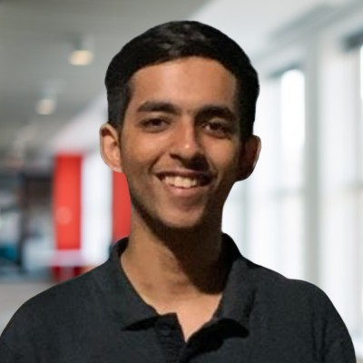

Associate, Bain and Company · GenAI and ML

I build GenAI systems that work at scale. My path has taken me from founding a venture-backed EV startup and filing patents, to publishing NLP research, to shipping production AI products at Bain and Company. I am drawn to problems where rigorous engineering meets genuinely messy real-world data.
Associate
Bain and Company, Gurugram
Building ExcelGPT — an agentic GenAI app that lets users interrogate Excel files in plain English. A multi-LLM pipeline classifies columns, maps cross-sheet formula dependencies, and routes queries through intent classification → table pruning → DuckDB SQL generation with automatic self-repair. The core insight: treat every cell as a string and resolve types at query time with TRY_CAST, making the system robust to real-world messy data.
Analyst
Bain and Company, Gurugram
Co-founded MetricEdge, Bain's internal GenAI product for benchmarking data extraction. By reverse-engineering PPT binary files instead of using OCR, the pipeline reached 97% accuracy and cut manual effort by 70% — deployed on Azure across 10+ global practices, saving 15+ FTE hours/week each. Presented to Bain's CTO and senior AI leadership.
Also built a multi-agent financial services chatbot that surfaces KPIs from Bain's proprietary benchmark database, and a compliance tool generating 150+ personalised governance reports. Rated top 5% firm-wide with a "Far Exceeded Expectations" mark. Prior to joining full-time, an Analyst Internship on a 23-country FMCG coffee client led to a deep learning pipeline that automated trend reporting (66% efficiency gain) and earned a Pre-Placement Offer.
Co-Founder and CEO
SelectricGo, Delhi
SelectricGo aggregated live data from 2,300+ EV charging stations across India, built a proprietary traffic-sensing system (patent filed), and developed an in-house route optimizer tailored to individual EV specs. Incubated at AIC Sangam, partnered with MathWorks, reached the top 10% of Y Combinator Summer 2022, and secured a $7,000 Government of India grant — leading a 15-member team end-to-end.
Mental Health Assessment through Multi-Modal Data using AI
Hierarchical Attention Network combining transcript, audio, and video signals from the DAIC-WOZ clinical dataset to classify depression. Received an A+ — highest grade in the department.
A Study on Robustness of NLP Models
Developed BEACOMP, a custom adversarial attack using TextAttack, that dropped average accuracy across five NLP models from 97.16% to 1.91% — exposing significant brittleness in widely-used pipelines.
Twitter Sentiment Analysis of the EV Industry in India using NLP
Used Tweepy and NLP sentiment models to map how Indians talk about EVs in real time — tracking perception across charging infrastructure, pricing, and range.
Languages
AI / ML
Data and Cloud
B.Tech, Electrical Engineering
Delhi Technological University, 2024
8.25 / 10 CGPA · Highest thesis grade in dept.CBSE Class XII
Kendriya Vidyalaya Arjangarh, Delhi, 2019
93.50% · Top 1% in JEE Maths (1.2M+ students)CBSE Class X
Kendriya Vidyalaya Arjangarh, Delhi, 2017
10 / 10 CGPA · Top 0.1% nationally